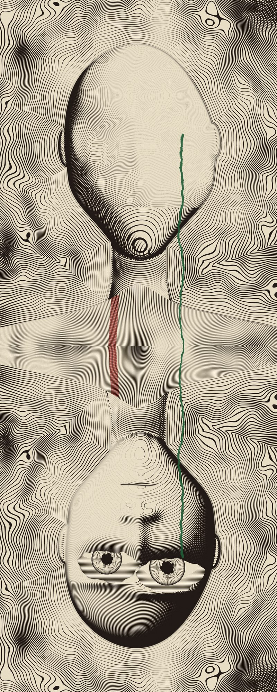

Eye to Eye
Engraving-style lines in black on cream, with one green line and one red tab; made by code, no brush but the burin. 2026.
The upper face has been wiped to paper. The green line begins on its cheek where the eye would be. It runs down the body, across the join, and stops at the eye of the one hanging below, who looks up at you.